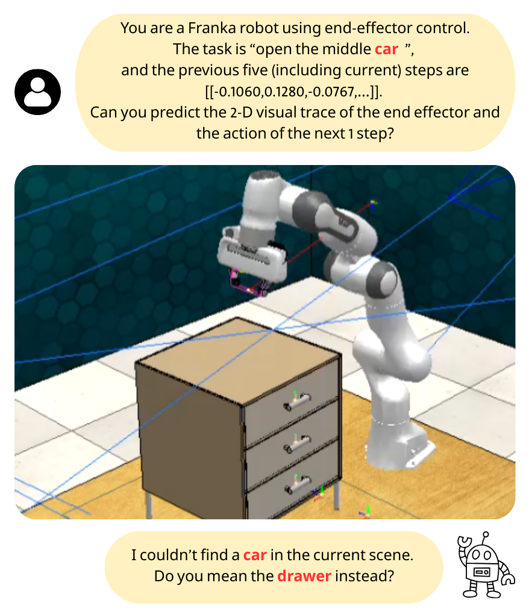
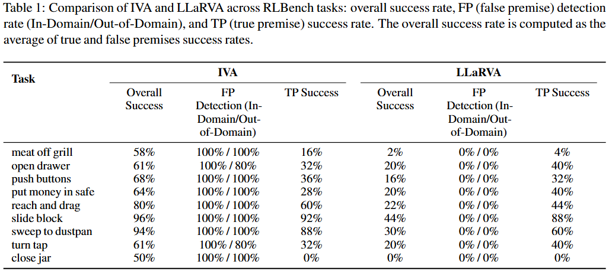
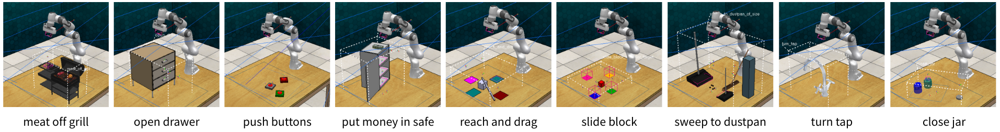

Teaching VLA Models to Reject the Impossible
IVA is a unified framework for Vision-Language-Action models that detects when an instruction is unfulfillable (false premise), clarifies or corrects it in natural language, and then acts safely. Trained with paired true- and false-premise instructions, IVA improves false-premise handling while maintaining strong true-premise task performance.



@article{iva2025,
title = {Do What? Teaching Vision-Language-Action Models to Reject the Impossible},
author = {Wen-Han Hsieh and Elvis Hsieh and Dantong Niu and Trevor Darrell and Roei Herzig and David M. Chan},
journal = {arXiv preprint},
year = {2025},
url = {https://arxiv.org/abs/2508.16292}
}